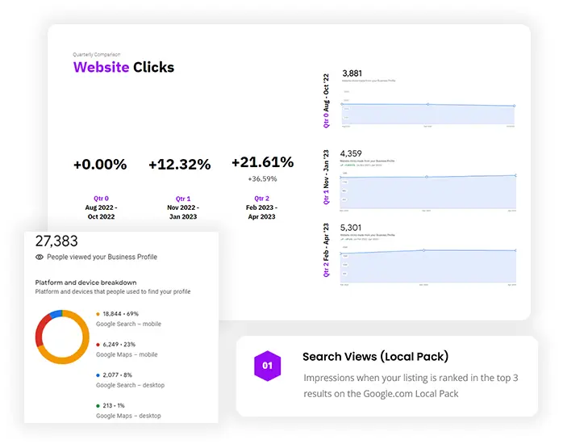
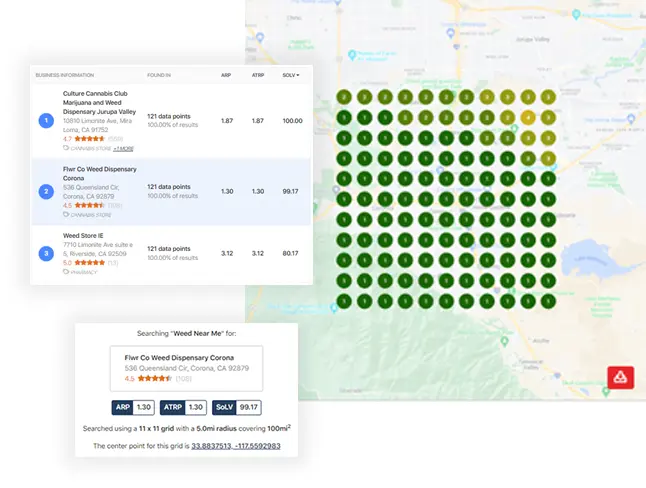
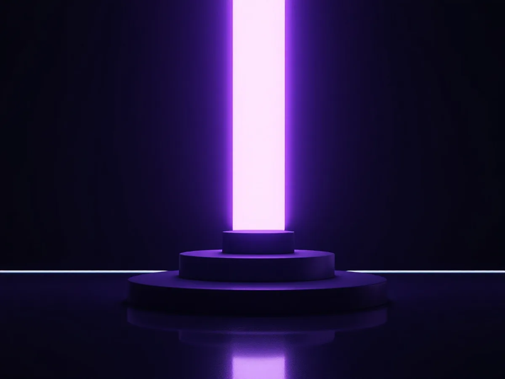

At Dispenza, our commitment to optimizing conversion rates goes beyond initial website development. We believe in continuous improvement and regularly enhance our clients' websites every 90 days. Through thorough analysis of data points, we identify areas where users may face barriers in completing transactions or visiting your physical location. Armed with this valuable information, we make data-driven decisions to improve your website's performance and maximize conversion rates.
CONVERSION RATE OPTIMIZATION
Conversion Rate Optimization (CRO) is a specialized art form, and at Dispenza, we excel in designing the easiest path for new customers to try your business. Our expertise in CRO is evident in our track record of success, including achieving a remarkable 53% conversion rate on Dutchie for NuLeaf Nevada, surpassing thousands of other dispensaries using the same platform.
With Dispenza, you can trust that our strategies are based on industry best practices and proven results. We eliminate guesswork and provide you with data-driven solutions.

Our success in CRO is evident in the outstanding performance of our clients. In 2021 alone, we have achieved the highest conversion rates among all customers using the Dutchie service. On average, over 22% of users who browse our clients' inventory end up converting into customers, demonstrating the effectiveness of our strategies in driving engagement and conversions.

Here's what sets our Conversion Rate Optimization services apart:
Data-Driven Decision Making:
Our CRO strategies are based on in-depth data analysis, allowing us to make informed decisions that lead to tangible improvements in conversion rates.
Continuous Enhancements:
We don't stop at the initial website development. We proactively enhance our clients' websites every 90 days to address any potential roadblocks and optimize the user experience.
Industry Expertise:
With our extensive experience in the cannabis industry, we understand the unique challenges and opportunities that dispensaries face. Our strategies are tailored specifically to this niche market, ensuring optimal results.

Proven Results:
Our track record speaks for itself. We have achieved exceptional conversion rates for our clients, outperforming competitors and helping them maximize their return on investment.
Comprehensive Approach:
Our CRO services cover all aspects of the customer journey, from initial website interaction to final conversion. We optimize each touchpoint to provide a seamless and compelling user experience.
Continuous Monitoring:
We closely monitor website performance, conversion rates, and user behavior to identify areas for improvement and make timely adjustments to enhance results.
With Dispenza's Conversion Rate Optimization services, you can unlock the full potential of your dispensary by increasing customer engagement, driving conversions, and ultimately boosting your revenue. Let us help you optimize your website's performance and create a pathway for success.
Contact us today to discuss how our CRO strategies can transform your dispensary's online presence and drive exceptional results.